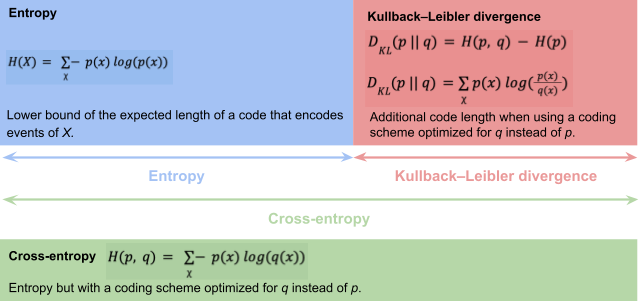

Information theory
Introduction to information theory, entropy, cross-entropy and Kullback–Leibler divergence.
This document is an introduction to information theory and concepts such as:
It also explains how these concepts are related to Maximum Likelihood Estimation.
Information content
Introduction
In information theory, the information content quantifies the level of surprise of an event.
It is derived from the probability of occurrence of a particular event.
Its different names are:
- Information content
Self-information
Surprisal
Shannon information
It can be thought of as an alternative way of expressing probability.
Origin
The self-information of an event \(x\) is noted \(I(x)\).
It is a function \(f\) of the probability \(p\) that \(x\) occurs.
i.e. \(I(x) = f(p(x))\)
Claude Shannon's definition of self-information was chosen to meet several axioms
\(f(p)\) is monotonically decreasing in \(p\).
- The more probable an event is, the less surprising it is and the less information it yields.
\(f(1) = 0\)
- An event with probability 1 is perfectly unsurprising and yields no information.
\(f(p_{1}\ p_{2}) = f(p_{1}) + f(p_{2})\)
- The information from independent events is the sum of the information of each event.
Definition
There is a unique function \(f\) that meets the 3 axioms, up to a scaling factor \(b\).
\(I(x) = - \log_{b}(p(x))\)
Different choices of \(b\) correspond to different units of information:
\(b = 2\): Shannon or bit.
\(b = e\): natural unit of information.
Entropy
Definition
Noted \(H(X)\).
Expected value of the self-information of a random variable.
Expected value of \(I(X)\):
\(H(X)\)
\(= E(I(X))\)
\(= \ E( - log(p(X)))\)
\(= \ \sum_{\chi}^{} - p(x)\ log(p(x))\)
Interpretations
The entropy \(H_{b}(X)\) in base \(b\) is the lower bound of the expected length of any code with an alphabet size of \(b\) that encodes events of \(X\).
The length is the number of characters, i.e. the number of units of information.
Thus, its unit is the unit set by the choice of \(b\):
\(b = 2\): number of bits.
\(b = 10\): number of decimal digits.
Each character can take a value in an alphabet of size \(b\).
See relationship to encoding for more details.
This can also be viewed as the expected amount of information needed to describe the state of the variable, considering the distribution of probabilities across all potential states.
Relationship to encoding
Proved by Claude Shannon.
For optimal encoding, the number of characters (bits for \(b = 2\)) used per symbol should reflect its information content.
More probable symbols require fewer bits, while less probable symbols require more bits.
This forms the basis of variable-length codes like Huffman coding or arithmetic coding.
Properties
The entropy is maximized when the probability distribution is uniform.
- The uncertainty (i.e. surprise or information content) is maximized as all events are equally probable.
History
Discovered by Claude Shannon.
Named after the thermodynamics entropy definition by Boltzmann (and generalized by Gibbs).
Von Neumann realized first that relation.
Cross-entropy
Measure the entropy but with a coding scheme optimized for \(q\) instead of \(p\).
\(H(p,\ q) = \ \sum_{\chi}^{} - p(x)\ log(q(x))\)
Kullback–Leibler divergence
Measure the additional code length when using a coding scheme optimized for \(q\) instead of \(p\).
Thus, it is computed as \(Cross\ Entropy - Entropy\):
\(D_{KL}(p\ ||\ q) = H(p,\ q) - H(p)\)
\(= \sum_{\chi}^{} - p(x)\ log(q(x)) - \sum_{\chi}^{} - p(x)\ log(p(x))\)
\(= \sum_{\chi}^{}p(x)\ log(\frac{p(x)}{q(x)})\)
Also called relative entropy (code length relative to the optimal one).
Summary
| Definition | Formula | Applied to | |
|---|---|---|---|
| Self information | - Level of "surprise" of event \(x\). | \(I(x) = - \log_{b}(p(x))\) | Individual event \(x\) |
| Entropy | - Expected value of information content. - Lower bound of the expected length of a code that encodes events of \(X\). | \(H(X) = \ \sum_{\chi}^{} - p(x)\ log(p(x))\) | Random variable \(X\) |
| Cross-entropy | - Entropy but with a coding scheme optimized for \(q\) instead of \(p\). | \(H(p,\ q) = \ \sum_{\chi}^{} - p(x)\ log(q(x))\) | Probability distributions \(p\) and \(q\) |
| Kullback–Leibler divergence | - Additional code length when using a coding scheme optimized for \(q\) instead of \(p\). | \(D_{KL}(p\ ||\ q) = H(p,\ q) - H(p)\) \(D_{KL}(p\ ||\ q) = \sum_{\chi}^{}p(x)\ log(\frac{p(x)}{q(x)})\) |
- The relationship between entropy, cross-entropy and Kullback–Leibler divergence can also be summarized with the following diagram:

For a fixed \(p\)
\(H(p)\) is constant and
Minimizing the cross-entropy is equivalent to minimizing the KL divergence.
Where does the name of the cross entropy loss come from?
In a supervised classification problem with \(C\) classes, the following loss, called the cross entropy loss, is often used
\(Loss(y_{i},\ \widehat{y_{i}}) = \ - \sum_{i = 1}^{n}\sum_{k = 1}^{C}y_{i,k}\ log\ \widehat{y_{i,k}}\)
Where
The label \(c_{i}\) is the class index for sample \(i\).
We note \(y_{i}\) the corresponding one-hot vector of size \(C\) with elements
\(y_{i,k} = 1\) for \(k = c_{i}\)
\(y_{i,k} = 0\) for \(k \neq c_{i}\)
The model outputs the estimated probabilities of each class in a vector \(\widehat{y_{i}} = f(x_{i})\) of size \(C\)
Thus,
The true probability that \(y_{i,k} = c_{i}\) is given by \(y_{i,k} = p(y_{i,k} = c_{i})\)
The estimated probability that \(y_{i,k} = c_{i}\) is given by \(\widehat{y_{i,k}} = q(y_{i,k} = c_{i})\)
The cross entropy between the probability distributions \(p\) and \(q\) is
\(H(p,\ q) = \ \sum_{k = 1}^{C} - p(y_{i,k} = c_{i})\ log(q(y_{i,k} = c_{i}))\)
Which is the same as
\(\sum_{k = 1}^{C} - y_{i,k}\ log\ \widehat{y_{i,k}}\)
Which is the definition of the loss \(Loss(y_{i},\ \widehat{y_{i}})\) given above, which is hence named the cross entropy loss.
Thus, minimizing the cross entropy loss is equivalent to minimizing the cross-entropy (or equivalently the KL divergence) between the true and the estimated probability distributions.

Forward vs reversed Kullback-Leibler divergence
The Kullback-Leibler divergence is not symmetric. This means that the Kullback-Leibler divergence between two distributions \(p\) and \(q\) can be computed in two ways.
Forward: \(D_{KL}(p\ ||\ q)\)
Reversed: \(D_{KL}(q\ ||\ p)\)
\(p\) usually denotes the true distribution while \(q\) is the approximated distribution.
A mnemonic way to remember which of the two expressions above is the forward \(D_{KL}\) or the reversed \(D_{KL}\) is explained is this blog post:
In the forward \(D_{KL}(p\ ||\ q)\), the bump of the first letter \(p\) points forward.
In the reversed (or backward) \(D_{KL}(q\ ||\ p)\), the bump of the first letter \(q\) points backward.
Forward Kullback-Leibler divergence
\(D_{KL}(p\ ||\ q) = \sum_{\chi}^{}p(x)\ log(\frac{p(x)}{q(x)})\)
The sum or expectation is weighted by the distribution \(p\).
Differences between \(p\) and \(q\) produce large \(D_{KL}\) on the mass of \(p\) (where \(p > 0\)) but not where \(p\) is small (\(p \simeq 0\)).
Minimizing the forward Kullback-Leibler divergence \(D_{KL}(p\ ||\ q)\) encourages \(q\) to put its mass wherever the mass of \(p\) is (putting its mass outside the mass of \(p\) is not penalized).
This results in mode covering behavior.

Reversed Kullback-Leibler divergence
\(D_{KL}(q\ ||\ p) = \sum_{\chi}^{}q(x)\ log(\frac{q(x)}{p(x)})\)
The sum or expectation is weighted by the distribution \(q\).
Differences between \(p\) and \(q\) produce large \(D_{KL}\) on the mass of \(q\) (where \(q > 0\)) but not where \(q\) is small (\(q \simeq 0\)).
Minimizing the reversed Kullback-Leibler divergence \(D_{KL}(q\ ||\ p)\) encourages \(q\) not to put its mass outside the mass of \(p\) (missing parts of the mass \(p\) is not penalized).
This results in mode seeking behavior.

Sources
https://en.wikipedia.org/wiki/Information_content
https://scikit-learn.org/stable/modules/model_evaluation.html#log-loss
https://mpatacchiola.github.io/blog/2021/01/25/intro-variational-inference.html